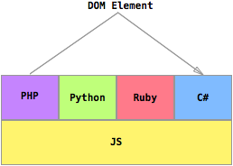

WebAssembly
Nick DesaulniersWhat's WASM?
A Bytecode for the web.
Binary and textual representation.
Work in progress by all browser vendors

In design
Plays well with web's security model
Compressable
View source
JavaScript
is here to stay
Improvement from ASM.js
Start up time
30% smaller than gzipped asm.js
Can be parsed 23x faster than large asm.js modules
Encodes an AST

Can I see some WASM?
Underspecification


Running other languages in the browser
not a priority for mvp
GC Coordination
Which GC cleans up?